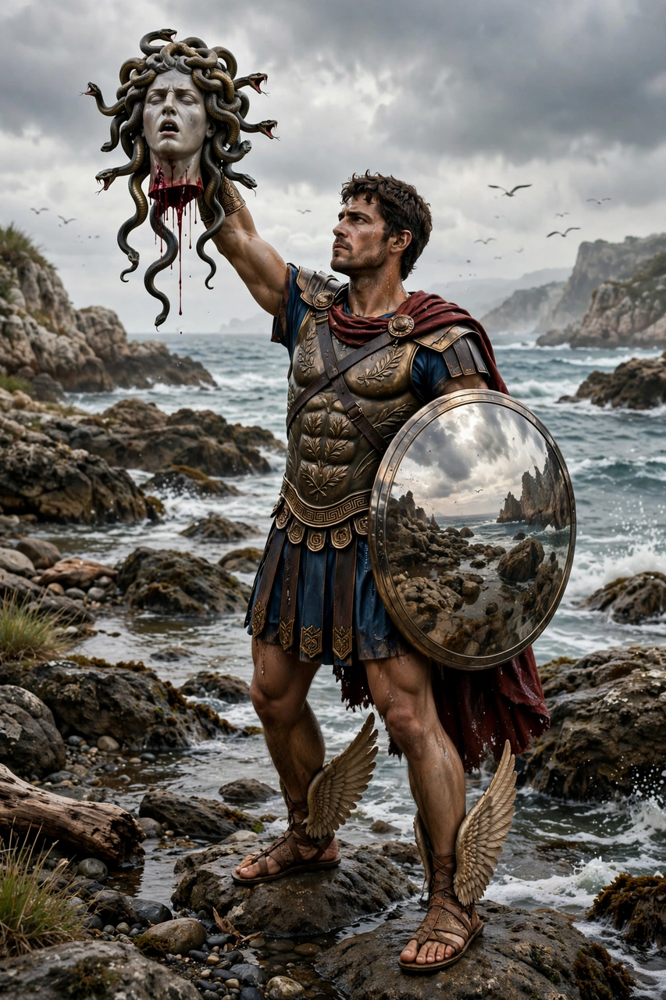

From Wikipedia, the free encyclopedia
| Perseus | |
|---|---|
| Grouping | Greek mythology; hero of Argos |
| Parents | Zeus and Danaë |
| Spouse | Andromeda |
| Known for | Slaying Medusa; rescuing Andromeda |
| Founder of | Mycenae (in tradition) |

Perseus is a hero of Greek mythology, son of Zeus and the mortal Danaë, celebrated above all for beheading the Gorgon Medusa and rescuing the princess Andromeda. His story — told in sources from Hesiod and Pindar to Apollodorus and Ovid — is one of the foundational hero tales of Greek myth, and the constellation Perseus in the northern sky bears his name.
Acrisius, king of Argos, warned by an oracle that his daughter's son would kill him, shut Danaë in a bronze chamber; Zeus nevertheless reached her in a shower of gold. Acrisius set mother and child adrift in a wooden chest, which washed ashore on the island of Seriphos, where the fisherman Dictys raised the boy. The island's king, Polydectes, desiring Danaë and wishing Perseus out of the way, demanded as a wedding "gift" the head of the Gorgon Medusa — a quest expected to be fatal.
Guided by Athena and Hermes, Perseus forced the Graeae — three sisters sharing one eye and one tooth — to reveal the way to the nymphs, who gave him winged sandals, a cap of invisibility and a special bag (kibisis) for the head; Hermes gave him an adamantine sickle-sword. Approaching Medusa — the only mortal Gorgon, whose gaze turned men to stone — by her reflection in his polished shield, Perseus beheaded her; from her blood sprang the winged horse Pegasus and the giant Chrysaor. On the journey home he used the head to petrify the Titan Atlas.
Passing the coast of Ethiopia, Perseus found Andromeda chained to a rock as a sacrifice to the sea monster Cetus, sent because her mother Cassiopeia had boasted of her beauty. He slew the monster (or petrified it with the Gorgon's head), married Andromeda, and at the wedding feast turned her former suitor Phineus and his followers to stone. Back on Seriphos he petrified Polydectes, made Dictys king, and returned the divine gifts to Hermes — the Gorgon's head he gave to Athena, who set it on her shield. Travelling to Larissa for funeral games, his thrown discus struck and killed an old man in the crowd: Acrisius, his grandfather, fulfilling the oracle he had tried to escape. Perseus is credited in tradition with founding Mycenae and exchanging Argos for Tiryns as his kingdom.
Greek mythology · Medusa · Andromeda · Heracles · Athena · Zeus